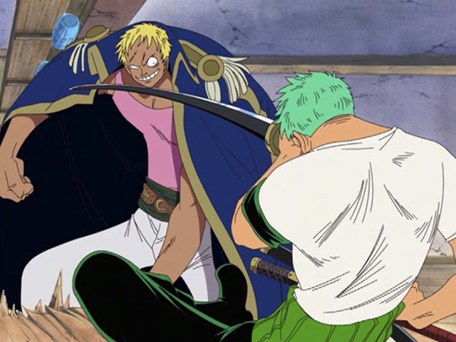
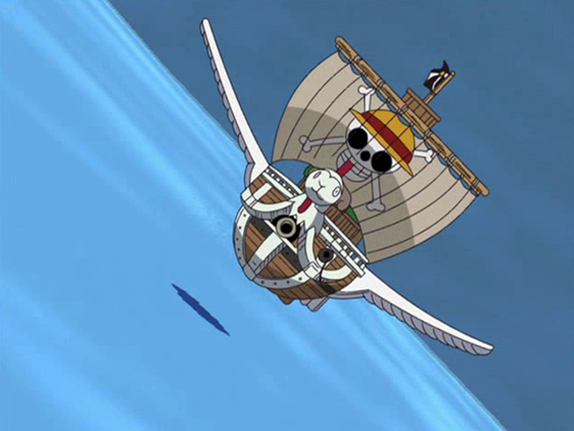
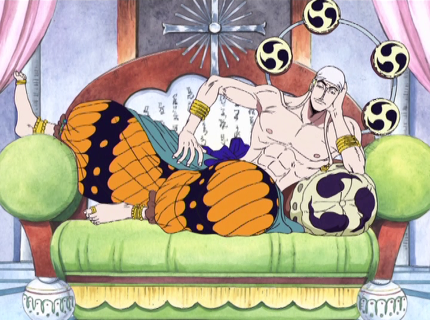
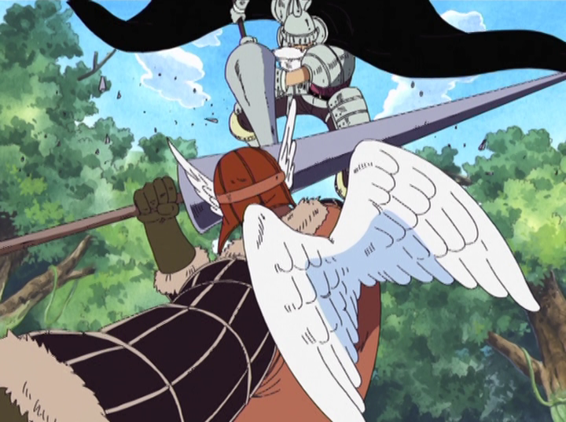
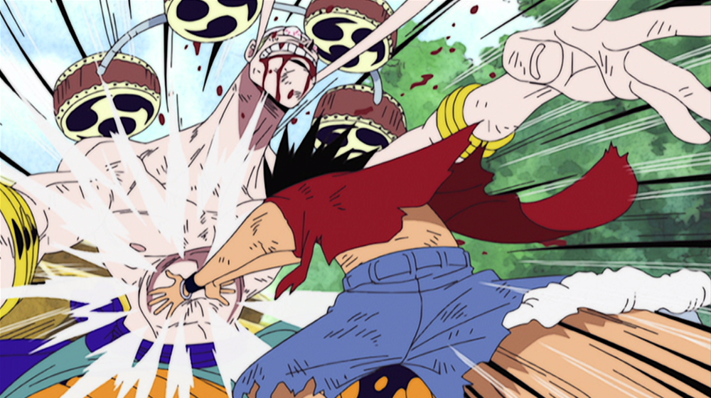
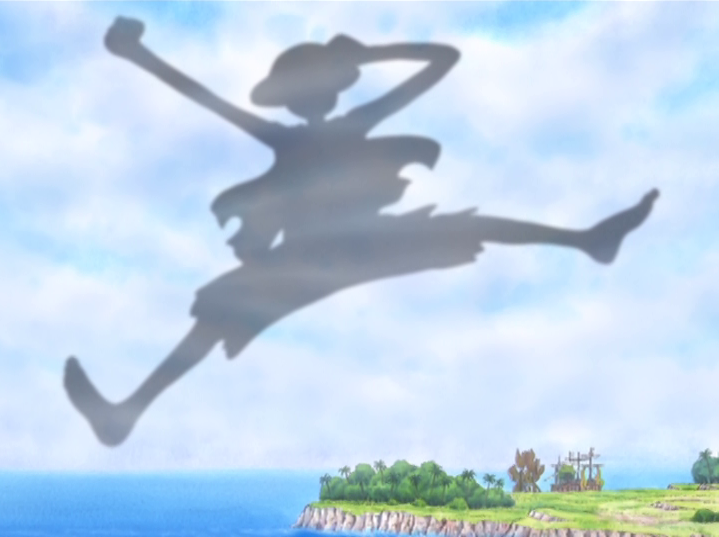

空島編
ハイエナのベラミー
 アラバスタでルフィに命を助けられた、ミス・オールサンデーことニコ・ロビン。ルフィに興味を持った彼女を新たな仲間に加え、航海を続ける一行の前に、突如空から巨大ガレオン船が降ってくる。直撃はまぬがれたものの、ルフィ達は〝記録指針(ログポース)〟の記録（ログ）を〝空島〟に奪われてしまう。さっそく〝空島〟を次なる目的地に定め、手掛かりを求めて沈んだガレオン船の探索に乗り出すが、そこでサルベージにやってきたマシラと遭遇する。
マシラから盗んだ〝記録指針〟をもとに、一行はジャヤという島へ。島の西にある町モックタウンに降り立つと、そこは〝ハイエナのベラミー〟をはじめとする凶悪な海賊達がはびこる無法地帯だった。情報収集の為に寄った酒場で、ベラミーにケンカを売られたルフィ達。だがルフィはゾロに「このケンカは絶対買うな!!!」と指示し、２人は無抵抗を貫く。
突き上げる海流
 モックタウンを後にしたルフィ達は、ロビンが集めてきた情報を元に〝うそつきノ－ランド〟の子孫モンブラン・クリケットのもとを訪ねる。クリケットは先祖が見たという〝海底に沈んだ黄金都市〟をずっと探し続けていた。彼から空島への行くための方法〝突き上げる海流(ノックアップストリーム)〟の存在を聞いた一行は、さっそく準備を開始。
だがルフィ達が留守にしていた間に、金塊を狙ったベラミー一味がクリケットを襲う。それを知ったルフィは、単身ベラミーのもとに殴り込み、たった一撃でこれを粉砕。クリケットの金塊を取り返す。そして一行は突き上げる海流に乗り、空島スカイピアへと出発する。
天の裁き
 〝空の海〟へ辿り着くやいなや、仮面の男の襲撃を受けたルフィ達は、危ないところを空の騎士ガン・フォールに助けられる。その後、〝天国の門〟をくぐりエンジェルビーチに到着。コニス、パガヤ親子と出会い、空島を満喫する麦わらの一味だったが、突如現れた神隊により、犯罪者として刑を宣告されてしまう。唯一神〝神(ゴッド)・エネル〟が治めるこのスカイピアでは、厳格な法が定められており、それに違反した者は犯罪者として裁かれる事になっていた。
神隊に抵抗し、第2級犯罪者となったルフィ達に下された刑罰は、聖地にて行われる〝天の裁き〟。メリー号ごと〝生贄の祭壇〟へと連れ去られたゾロ、ナミ、チョッパー、ロビンを救い出す為、ルフィ、ウソップ、サンジの３人は聖地〝神の島(アッパーヤード)〟へ向かう。
神の島の冒険
 〝神の島〟にやってきたルフィ達は、４つの試練の中から〝玉の試練〟に挑む。エネルに仕える四神官の一人、〝森のサトリ〟の相手の動きを先読みする〝心綱(マントラ)〟に翻弄されるも、力を合わせてこれを撃破。
その頃、島内の探索に出かけたゾロ達は、〝神の島〟がかつて引き裂かれた〝ジャヤの片割れ〟である事実を突き止める。ノーランドが目撃し、海底に沈んだと思われていた黄金郷、それがこの〝神の島〟だったのだ。チョッパーはメリー号の見張りの為、一人祭壇に残っていたが、そこに神官スカイライダー・シュラが現れる。チョッパーに呼び出されたガン・フォールが救援に駆けつけるも、激戦の末に敗れてしまう。
その後、無事合流を果たした麦わらの一味は、ノ－ランドの航海日誌に隠された謎を解き明かし、黄金の在りかを突き止める。そして翌朝、黄金探しへと出発する。一方、〝故郷〟を取り戻す為、ゲリラとして戦いを続けてきた〝シャンディア〟は、エネルを討つべく、総攻撃に打って出る。これを予期したエネルは配下に迎え撃つよう指示。麦わらの一味、シャンディア、エネル率いる神隊による三つ巴のサバイバルが幕を開ける。
海賊ルフィvs神・エネル
 激化する戦いの中で次々と脱落者が出る中、ルフィが大蛇(ウワバミ)に飲み込まれてしまう。さらにエネル自身も参戦し、戦いは混戦を極める。戦いに生き残ったゾロ達を前に、「全ての人間を空から引きずり下ろし、伝説の地〝限りない大地(フェアリーヴァース)〟を目指す」と宣言するエネル。ゾロ達はエネルに戦いを挑むが、雷を自在に操る〝ゴロゴロの実〟の圧倒的な力の前になす術もなく倒れてしまう。一人攻撃を逃れたナミは、この窮地を脱する為、エネルに付いていく事を選ぶ。
空飛ぶ方舟〝マクシム〟に乗り込み、スカイピアを消滅させようと動き出すエネル。大蛇の体内から脱出したルフィは、シャンディアの少女・アイサの〝心綱〟を頼りにその後を追う。エネルによって巨大な黄金の玉を腕に付けられてしまったルフィだったが、雷の〝天敵〟であるゴムの能力でエネルを追い詰めていく。
島の歌声
 そしてついに渾身の一撃がエネルをとらえる。その一撃は〝黄金の鐘〟を打ち鳴らし、その鐘の音を耳にしたクリケット達は〝黄金郷〟が実在していた事を知る。戦いののち、〝空の民〟とシャンディアは和解し、400年に渡る両者の争いに終止符が打たれた。
宴の後、鐘の台座に刻まれた〝歴史の本文（ポーネグリフ）〟を読み解いたロビンは、神の名を持つ古代兵器〝ポセイドン〟の存在を知る。さらに〝歴史の本文〟には、海賊王ロジャーのメッセージも残されていた。そしてルフィ達は、シャンディア達が鳴らす鐘の音に送られ、空島を後にした。